課後複習首頁第 2 週｜認知發展
認知發展：皮亞傑與維高斯基
本週分為兩部分。第一部分延續上週的教育心理學研究方法，介紹描述性研究與行動研究，並以六個研究問題練習選擇合適的研究方法。第二部分進入「認知發展」主題：先說明發展理論關注的三個議題，再介紹認知發展領域最重要的兩位學者，包括皮亞傑（Piaget）的認知發展論與四個時期、維高斯基（Vygotsky）的社會文化觀點，最後比較兩人的理論。
描述性研究：調查、晤談、觀察、個案研究與民族誌
上週介紹的實驗法與相關法之外，第三類研究方法是描述性研究。描述性研究的目的在於發現並詳盡蒐集某一主題的資料，描述研究者關心的現象，常用於質性研究。主要有三種蒐集資料的方式：
- 調查（survey）：特別是問卷調查，無論線上問卷或紙本問卷，大多進行量化分析，通常歸類為量化取向的研究方法。
- 晤談（interview）：主要是質化取向的研究方法，通常需要將錄音謄寫成逐字稿再加以分析。例如皮亞傑的臨床晤談（clinical interview）：設計一個活動或任務讓兒童完成，再追問「你為什麼會這樣想？」
- 觀察（observation）：研究者直接進入研究情境，系統性地觀察並記錄個體或群體的行為與互動，例如進入教室觀察並記錄兒童的違規行為。
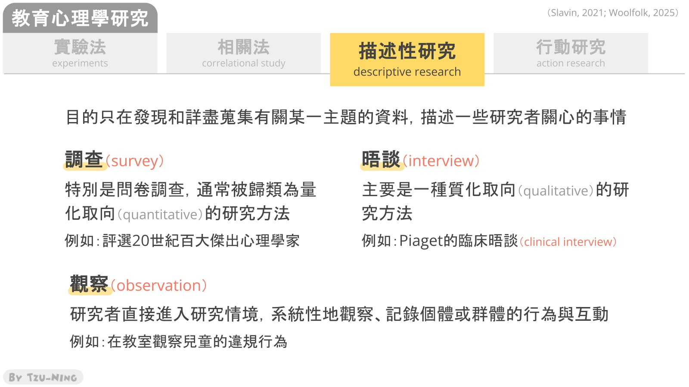
描述性研究中還有兩種常見的研究類型：
- 個案研究（case study）：深入探討一個人、團體或特定情境，了解其經驗、發展歷程與所處脈絡。例如 Bloom 等人（1985）研究 120 位傑出藝術家、運動選手與學者的成長歷程，除了訪談當事人，也訪談其父母、教師或教練，分析傑出才能的發展因素。個案研究不以研究人數多寡來界定，可以研究單一個案，也可以比較多個個案。
- 民族誌研究（ethnography）：透過長期觀察與訪談，深入了解特定群體在自然情境中的生活、互動及共享的文化與信念。例如 Anagnostopoulos（2006）觀察並訪談芝加哥高中師生，探討升級政策如何影響師生對不同學生的分類、評價及學習機會。民族誌研究的關鍵不只是研究某個群體，而是理解該群體的文化、價值觀及日常實踐。
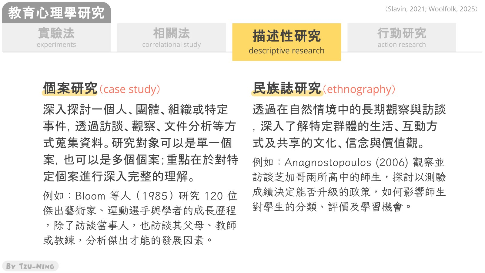
行動研究
行動研究（action research）是一種特別形式的描述性研究，特別之處在於研究者本人就是教學者，研究目的在於解決自己在教學現場遇到的問題。例如，在職進修碩士的教師以自己任教的班級為研究對象：先參考相關理論、設計教學方案，執行後依據遇到的問題與反思回到理論，再修正方案、再次執行。
這種在理論與實務之間來回辯證的歷程，是行動研究的核心特色。行動研究不強調理論的發展與研究結果的普遍應用，而是由身在現場的當事人透過批判、對話與反思，釐清問題的癥結並嘗試解決。
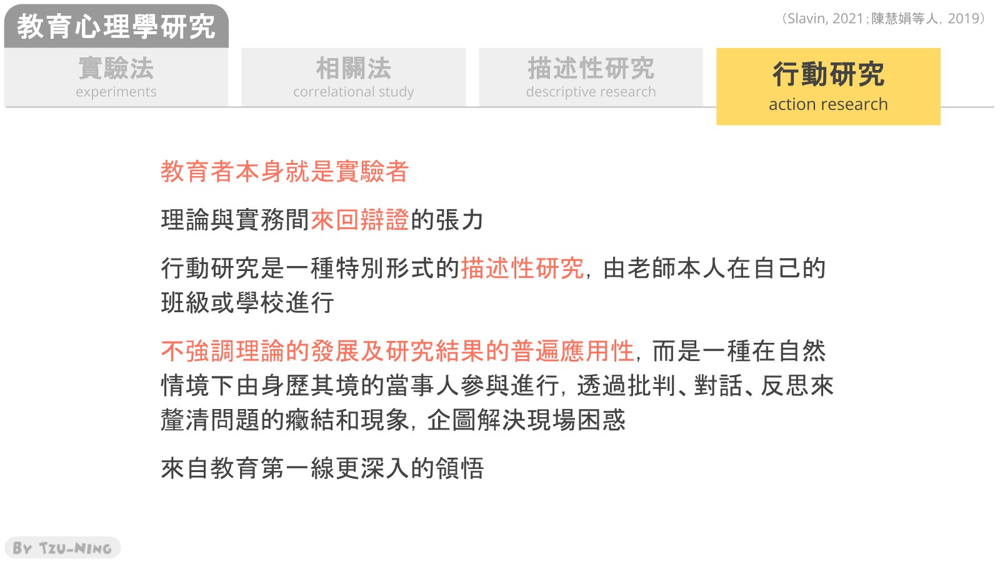
練習：六個研究問題適合哪一種方法？
課堂以六個研究問題進行分組討論，判斷每個問題最適合採用的研究方法。判斷時應留意研究問題中的關鍵字。
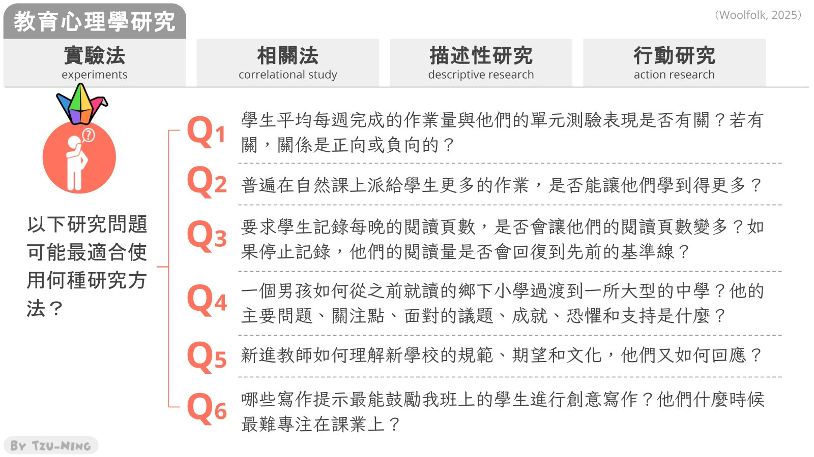
| 研究問題 | 適合的方法 | 判斷線索 |
|---|---|---|
| Q1 學生平均每週完成的作業量與單元測驗表現是否有關？若有關，是正向或負向？ | 相關法 | 只想探討兩個變項是否有關；問題描述的是一般情況，並非特定在自己的班級。 |
| Q2 普遍在自然課上派給學生更多作業，是否能讓他們學得更多？ | 實驗法；若無法隨機分派則為準實驗研究 | 一班派較多作業、另一班作為控制組，再以測驗比較學習量。以既有班級分組、無法隨機分派時，屬準實驗研究。 |
| Q3 要求學生記錄每晚的閱讀頁數，是否會讓閱讀頁數變多？停止記錄後，閱讀量是否會回到先前的基準線？ | 單一受試實驗（ABAB 設計） | 問題中寫出了基準線（baseline）、介入（intervention）與撤除後的變化。 |
| Q4 一個男孩如何從鄉下小學過渡到大型中學？他的問題、關注點、成就、恐懼與支持是什麼？ | 描述性研究：個案研究 | 深入探討單一個案（一個男孩）的經驗與轉銜歷程。 |
| Q5 新進教師如何理解新學校的規範、期望與文化，又如何回應？ | 描述性研究：民族誌研究 | 理解一個群體（新進教師）如何面對學校的規範、期望與文化，可能以長期觀察與晤談蒐集資料。 |
| Q6 哪些寫作提示最能鼓勵我班上的學生進行創意寫作？他們什麼時候最難專注在課業上？ | 行動研究 | 關鍵字是「我班上」：教師研究自己班上的問題。 |
發展理論關注的三個議題
進入認知發展之前，先說明發展心理學的基本議題。發展理論的學者大致關心三個問題，每個問題都對應一組爭論：
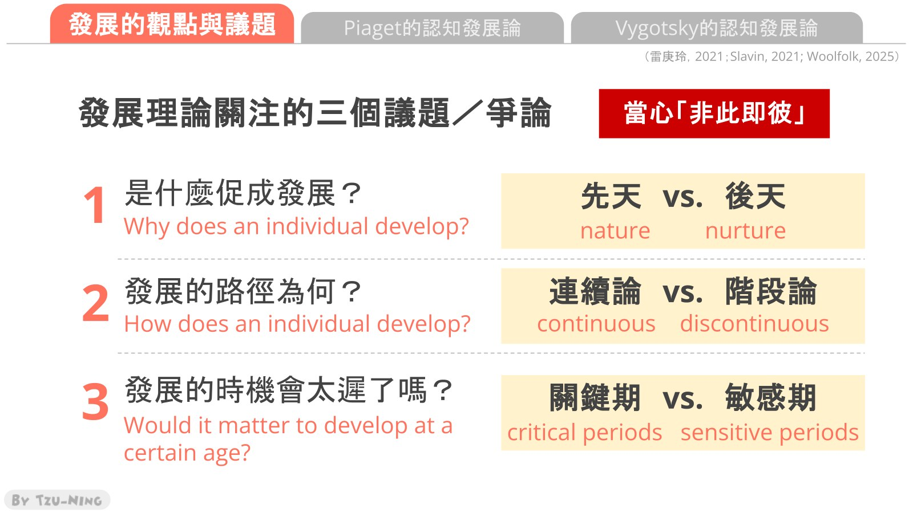
是什麼促成發展？先天 vs. 後天
第一個問題是「是什麼促成發展？」（Why does an individual develop?），也就是哪些因素影響個體的發展。若認為一個人的智力、性格或能力主要受到遺傳與生物因素影響，觀點偏向先天（nature）；若認為家庭、教育、文化與學習經驗對發展具有重要影響，觀點則偏向後天／經驗（nurture）。現代發展心理學普遍認為，先天與後天並非相互排斥，而是透過交互作用共同影響個體的發展。
發展的路徑為何？連續論 vs. 階段論
第二個問題是「發展的路徑為何？」（How does an individual develop?），也就是個體如何隨著時間發展。課堂以「學齡前兒童是否應學習一些牛頓物理定律的知識，為日後的學習種下種子」為例，引導思考學習與發展的關係。
連續論（continuous development）認為，發展是逐漸累積、持續變化的過程，強調能力在程度或數量上的改變；不連續論（discontinuous development）則認為，發展會經歷不同階段，各階段在思考或行為方式上具有質的差異，因此也常稱為階段論（stage theories）。
階段論通常認為，個體必須具備一定的發展條件，才能展現下一階段的能力。例如，皮亞傑強調生理成熟、經驗與認知平衡化等因素，共同促成認知結構的改變。階段之間可能出現相對明顯的轉變，而非單純的能力累積。凡是主張發展具有不同階段，且各階段存在質性差異的理論，通常較接近階段論。
發展的時機會太遲了嗎？早期 vs. 晚期經驗、關鍵期 vs. 敏感期
第三個問題是「發展的時機會太遲了嗎？」（Would it matter to develop at a certain age?），也就是早期或晚期經驗何者對發展更重要。重視早期經驗（early experiences）的觀點認為，生命早期的經驗可能對日後發展產生深遠影響，例如嬰兒時期的情緒需求若長期未獲滿足，可能增加日後社會情緒適應的困難；重視晚期經驗（later experiences）的觀點則強調，個體仍會持續受到後續生活環境、教育與人際互動的影響，早期經驗不必然決定一生的發展。
與發展時機相關的概念還包括關鍵期（critical period）與敏感期（sensitive period）。關鍵期是指某些發展必須在特定時期獲得必要的經驗或刺激，否則可能造成難以逆轉的影響；敏感期則指個體在某段時期對特定經驗特別敏感，學習或發展較容易發生，但錯過這段時期後，仍可能透過後續經驗持續發展。對許多人類心理與認知能力而言，敏感期通常比嚴格的關鍵期更適合描述其發展特性。
這三組爭論看似兩極，實際上並非非此即彼。現代發展心理學更重視先天與後天的交互作用、連續與不連續變化的並存，以及早期與晚期經驗對發展的共同影響。
發展的三項基本通則
雖然發展理論在上述議題上仍有不同觀點，但有三項基本通則獲得多數理論的支持：
- 發展的速度因人而異。 不同個體，甚至同一個體在不同領域的發展速度，都可能有所不同。
- 發展通常具有一定的順序。 許多能力的發展具有相對可預期的先後次序，但具體時間可能因人而異。
- 發展通常需要時間逐漸形成。 發展是持續累積與變化的過程，即使出現明顯的能力躍進，背後往往也有先前的發展基礎。
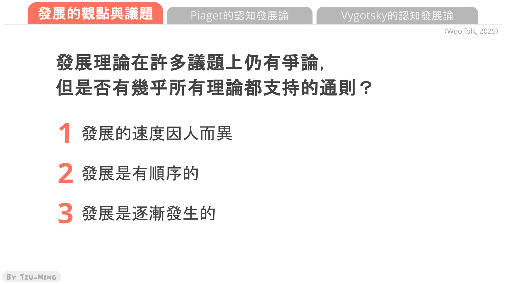
皮亞傑其人：從軟體動物到兒童的思考
皮亞傑（Jean Piaget，1896–1980）生於瑞士，被譽為「認知發展心理學之父」。他一開始研究的並不是兒童：11 歲時就發表了第一篇短文，內容是對白化麻雀的觀察；1918 年取得博士學位，研究的是軟體動物。早期的生物學研究，使他開始思考生物如何透過調整自身來適應環境，這個觀點後來也影響了他的認知發展理論：兒童並非被動接受外界資訊，而是會主動調整自己的認知結構，以適應新的環境與經驗。
皮亞傑年輕時前往巴黎，在比奈（Alfred Binet）的合作夥伴西蒙（Théodore Simon）主持的機構工作。比奈與西蒙曾共同發展出世界上第一套實用的智力測驗，用來辨識需要額外教育協助的兒童。皮亞傑參與智力測驗的標準化研究時，注意到年齡相近的兒童往往會出現相似的錯誤。比起答對或答錯，他更好奇兒童究竟是怎麼思考的。於是，他透過設計任務、觀察兒童的回答，並進一步追問「你是怎麼想的？」，逐漸發展出臨床晤談法（clinical interview），並以此作為建立認知發展理論的重要研究方法。
皮亞傑自稱發生認識論者（genetic epistemologist）。這裡的 genetic 並非指基因，而是指知識如何產生與發展。他也曾以自己的三個孩子為研究對象，長期觀察他們早期的認知發展。2002 年，Haggbloom 等人根據學術引用、專家評價等指標，評選 20 世紀最具影響力的心理學家，皮亞傑名列第二，僅次於 Skinner。
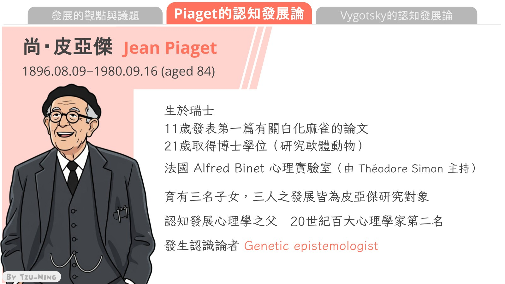
皮亞傑的核心概念：基模、同化與調適
皮亞傑兼重先天與後天：一方面強調成熟（maturation）／生理準備度（biological readiness），認為生理成熟為認知發展提供必要基礎；另一方面，也重視兒童透過與環境互動，逐步建構與調整認知結構。基模（scheme）是個體用來理解環境、組織經驗與採取行動的基本單位，例如嬰兒出生時便具備的吸吮、抓握等反射動作，之後隨著經驗累積，逐漸發展出更複雜的基模。
皮亞傑將兒童視為探索世界的「小小科學家」，強調兒童是主動建構知識的人（active constructor of knowledge）。相較於行為學派重視環境刺激與行為後果對學習的影響，皮亞傑更強調兒童如何透過主動探索，將新經驗納入既有基模（同化，assimilation），或修正原有基模以適應新經驗（調適，accommodation）。
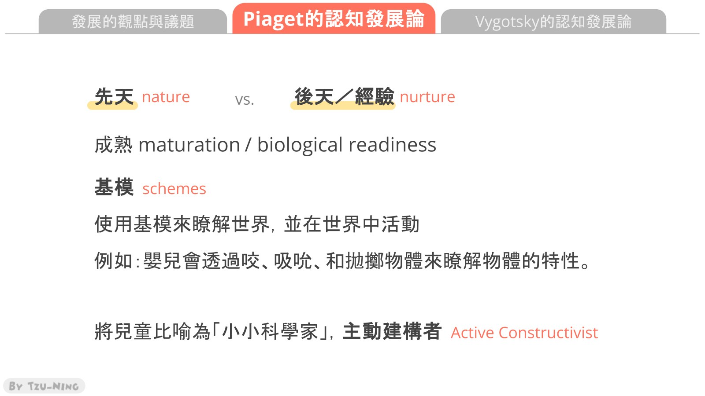
同化與調適
以「敲打」的基模為例：幼兒拿起硬硬的東西敲桌子，會發出聲音。拿到一個沒看過、但同樣硬的新東西時，幼兒照樣拿起來敲，也發出聲音。這表示幼兒能運用原有的基模處理新經驗，不需要改變原本的動作方式，稱為同化（assimilation）。但若拿到的是一顆雞蛋，敲下去卻破掉了，結果與原本的預期不符。幼兒逐漸發現，並非所有摸起來硬硬的東西都適合敲打，之後拿雞蛋時改用較輕柔的方式。這種因應新經驗而修正原有基模的過程，稱為調適（accommodation）。
生活中另一個例子：幼兒學到「四條腿、毛茸茸、有尾巴的是狗狗」，之後看到哈士奇也叫狗狗，這是同化；看到波斯貓也叫狗狗，被告知「這是貓咪」後，逐漸發現並非所有四條腿、有尾巴的動物都是狗，於是修正原本的狗狗基模，並建立貓咪的新基模，這是調適。
皮亞傑認為，認知發展涉及兩項基本功能：適應（adaptation）與組織（organization）。適應是指個體透過同化與調適，因應環境中的新經驗；組織則是將不同基模相互協調與整合，形成更複雜且有系統的認知結構。例如，嬰兒逐漸將「看」與「抓握」兩個基模結合，發展出看到玩具便伸手抓取的能力。兩者相互配合，共同促進認知發展。
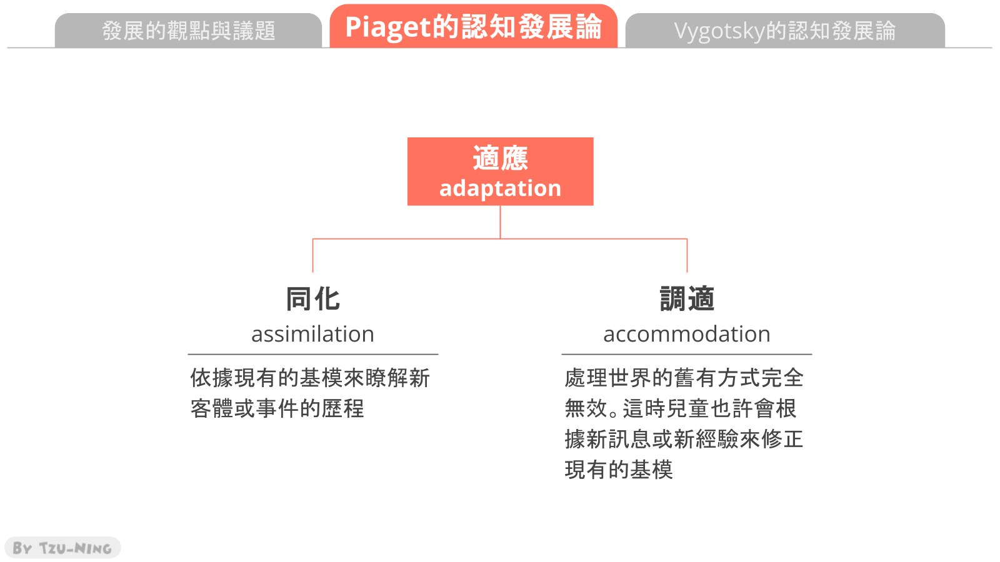
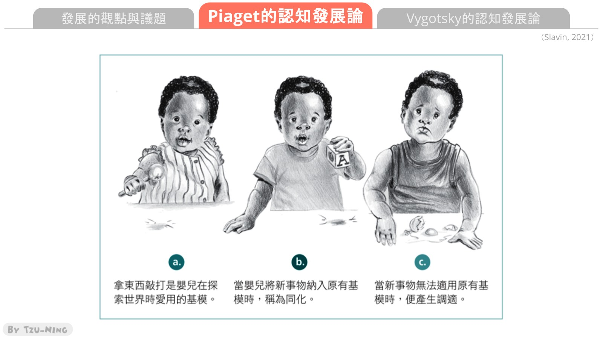
平衡與失衡
當外在事物的難度與自己的認知結構複雜度相當時，處於平衡（equilibrium）狀態，以同化處理即可。當外在事物難度提高、超出現有的認知結構時，便產生失衡（disequilibrium），此時需要調適，提升認知結構的複雜度，直到重新達到平衡，再繼續同化。透過這樣的循環，認知結構的複雜度隨著外在事物的難度逐步提升。
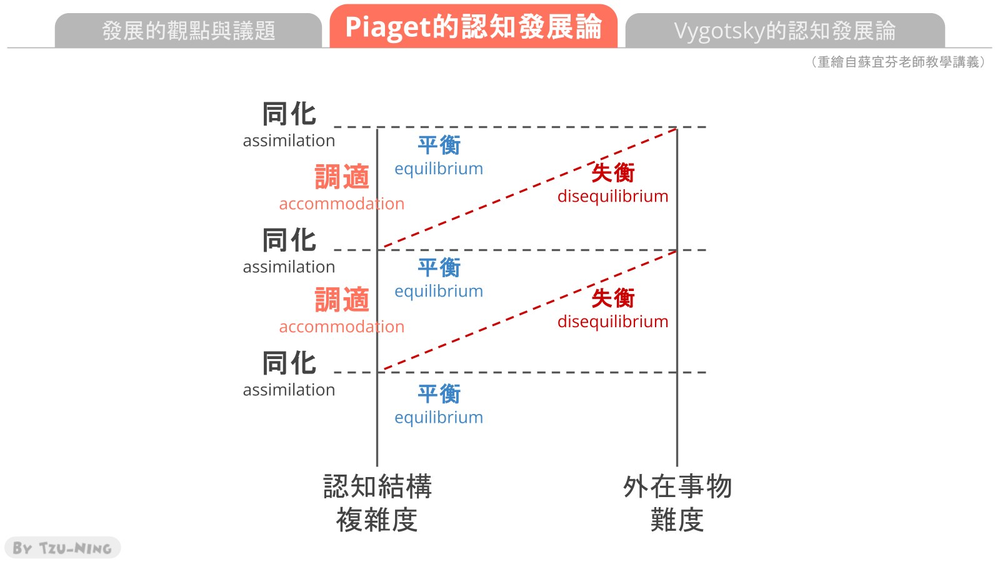
四個發展時期
皮亞傑將認知發展分為四個時期。由於他將發展劃分為階段，皮亞傑屬於階段論（不連續論）。以下各期的年齡是理論上的大致分期。
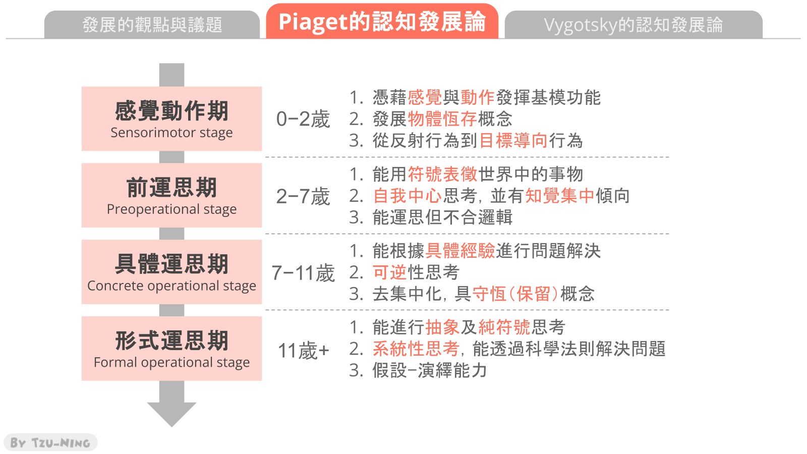
感覺動作期（0–2 歲）
此時期的基模主要是視、聽、觸等感覺，以及手的抓取動作。一開始以反射行為為主，約 6 個月後逐漸發展出目標導向行為，也就是有目的的行為，例如伸手拿取、用眼神追尋想要的東西。
約 1 歲左右，兒童發展出物體恆存（object permanence）概念：知道東西即使看不到，仍然存在。尚未具備物體恆存概念的嬰兒，在球被布蓋住之後便不會去找，因為看不到就等於不存在；這也是「躲貓貓」（peek-a-boo）遊戲會讓嬰兒感到有趣的原因。
物體恆存之所以重要，在於它意味著兒童開始發展出表徵能力。知道媽媽不在眼前時仍然存在，日後才能用「媽媽」這個詞代表她；表徵能力是語言發展的重要基礎。
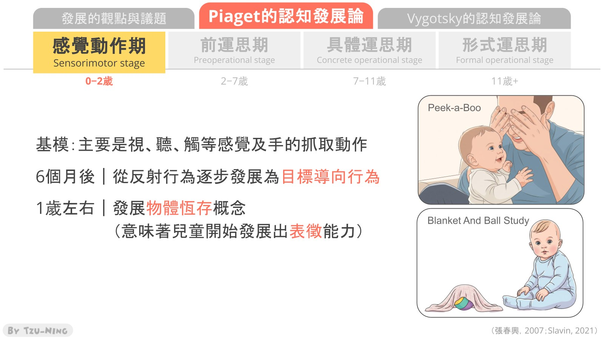
課堂播放的影片中，7 個月大的嬰兒在玩具被布蓋住後便不再尋找；9 個月大的嬰兒已會掀布找玩具，但出現 A-not-B 錯誤（AB 位置錯判）：玩具連續幾次都藏在 A 處並被找到後，即使嬰兒親眼看到玩具改藏到 B 處，仍會到 A 處去找。後續研究也發現，物體恆存出現的時間可能比皮亞傑估計的更早。
前運思期（2–7 歲）
前運思期的兒童遇到問題已會運用思維，但思考不合乎邏輯，原因在於三種心理上的限制：
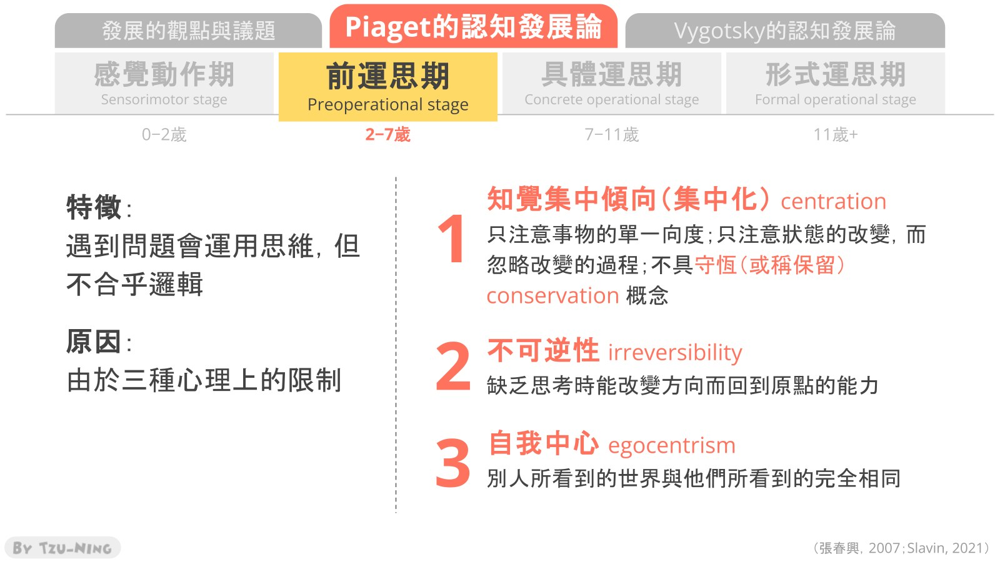
知覺集中傾向（集中化）
知覺集中傾向（centration）是指只注意事物的單一向度，只注意狀態的改變而忽略改變的過程，因此不具守恆（conservation，或譯保留）概念。例如，在兒童面前確認兩杯水一樣多之後，當面將其中一杯倒入細長的杯子，再問哪一杯比較多，前運思期的兒童會回答高的那杯比較多，因為「它比較高」，只注意到水位變高，沒有注意到杯子變細。
常見的守恆作業（conservation task）包括液體數量、數量、物質（質量）與長度。進行守恆作業時，必須先讓兒童確認兩者一樣多，並讓兒童看著施測者做出改變。課堂影片中的兒童，在硬幣排列拉長、木棍被移動、水倒入不同杯子、黏土被壓扁之後，都認為其中一邊比較多或比較長。
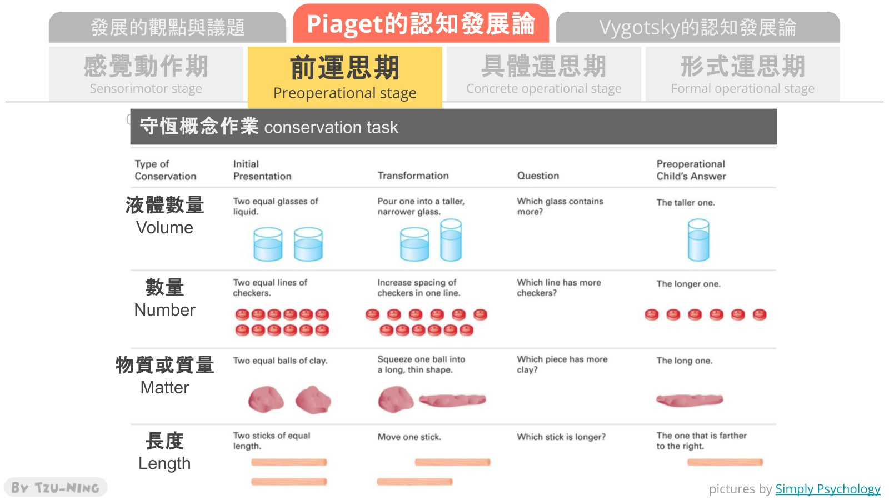
不可逆性
不可逆性（irreversibility）是指缺乏思考時能改變方向、回到原點的能力。具備可逆性思考，才能從 7 + 5 = 12 推知 12 − 5 = 7。前運思期的兒童被問到「你有哥哥嗎？」會回答有，「他叫什麼名字？」回答吉姆，但再問「吉姆有弟弟嗎？」卻回答沒有，因為無法反過來想到吉姆的弟弟就是自己。
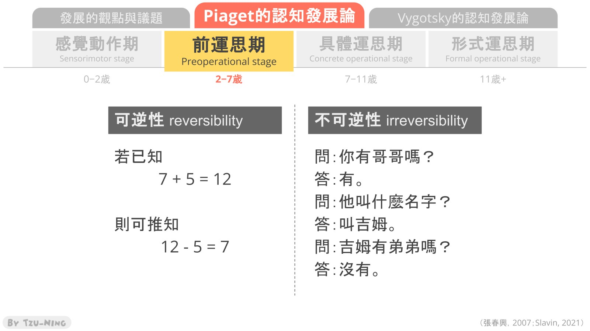
自我中心
自我中心（egocentrism）是指以為別人看到的世界與自己看到的完全相同。皮亞傑以三山實驗（Three Mountains task）探討這一點：桌上的模型有三座山，一座山頂有十字架，一座較矮的綠色山上有小房子，最高的一座山頂有積雪。先請兒童指出哪一張照片符合自己看到的景象，再將玩偶放在其他位置，請兒童指出玩偶看到的景象。具自我中心的兒童會選擇與自己視角相同的照片。三山實驗雖稱為「實驗」，實際上仍屬臨床晤談。據說皮亞傑的靈感來自瑞士的阿爾卑斯山景。
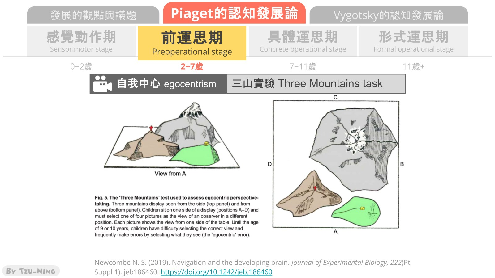
前運思期的自我中心與青少年期的自我中心不同。青少年知道別人看到的視角與自己不同；青少年的自我中心是覺得全世界都在注意自己，例如過馬路時彷彿在走秀。
具體運思期（7–11 歲）
具體運思期大致對應國小階段。此時期的兒童能循邏輯法則推理思維，但只限於眼見的具體情境或熟悉的經驗。主要特徵有六項。
排序與分類
排序（seriation）是以邏輯方式排列事物，例如從小排到大。4 歲以下的兒童不會嘗試將木棍排成一行；5 歲左右只能排出局部有序的兩、三根一組，無法串成完整序列，這與前運思期只注意片段的集中化傾向有關；6 歲左右可透過反覆嘗試建構完整序列；7 歲左右能運思完成序列。
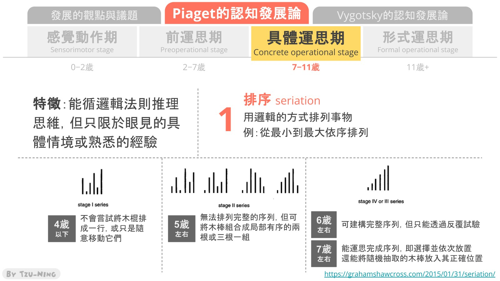
分類（classification）是能以多種方式組織物件，例如依長度或顏色分類。與分類相關的是類包含（class inclusion）：一個類別可以包含在另一個類別之中。例如面對 6 朵紅花與 4 朵藍花，問「紅花比較多，還是花比較多？」具備類包含概念的兒童會回答花比較多；不具備者則回答紅花比較多。具備類包含概念，才能學習「城市屬於省或州，省或州組成國家」，或生物分類「界、門、綱、目、科、屬、種」這類層層包含的知識。
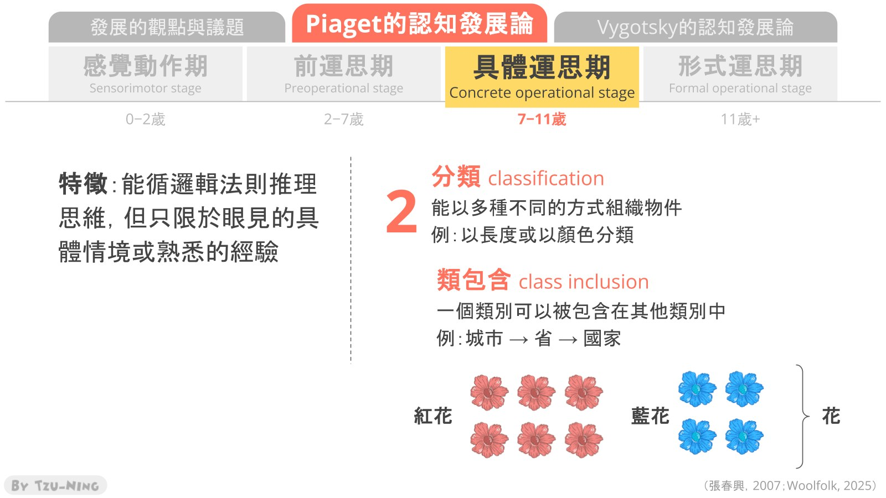
遞移推理
遞移推理（transitivity）是根據甲、乙兩物分別與第三物的關係，推斷甲乙之間的關係。例如狗是哺乳動物、拉布拉多犬是狗，那麼拉布拉多犬一定是哺乳動物；又如 A > B、B > C，則 A > C。
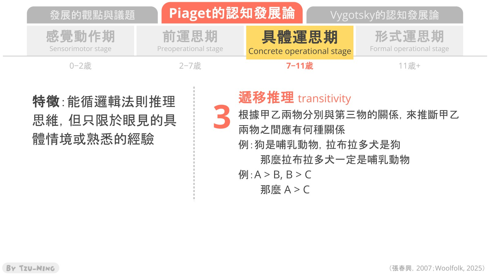
去集中化、可逆性思考與推論的實在
以下三項是前運思期做不到、具體運思期能做到的能力：
- 去集中化（decentering）：能同時注意事物兩個以上的向度，不但注意狀態的改變，也注意改變的過程，因此具守恆概念。
- 可逆性思考（reversibility）：能反過來思考，包括逆元素轉換（inversion，如 +1／−1）與倒反轉換（reciprocity，如「我比你高」等於「你比我矮」）。
- 推論的實在（inferred reality）：能同時把脈絡中其他事物的意義列入考慮，推論實體的樣貌。例如一輛紅色的車用黑布蓋起來，仍知道它是紅色的；年紀較小的兒童則可能認為蓋上黑布就變成黑色的車。
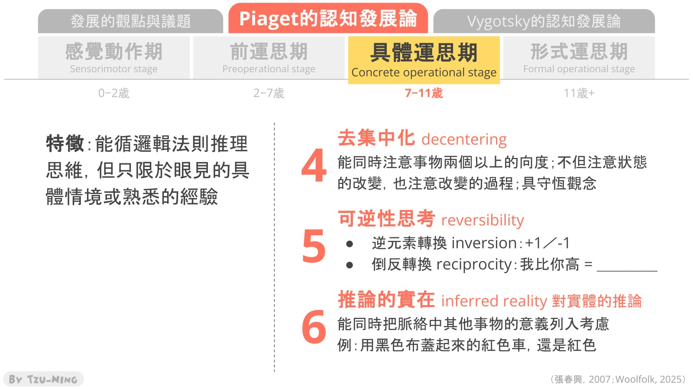
形式運思期（11 歲以上）
皮亞傑認為，11 歲以上的兒童能進行抽象的假設演繹思考（hypothetico-deductive reasoning）。主要特徵有三項：
- 抽象思考與系統性思考：能考慮所有可能性（think all the possibilities）。最著名的例子是鐘擺問題（pendulum problem）：思考哪些因素會影響鐘擺擺動的速率，例如擺繩長度、擺錘重量、放開的高度與角度、推的力道等，並一次只改變一個因素來進行實驗。即使鐘擺不在眼前，也能進行抽象思考。
- 複雜的遞移推理：具體運思期能處理「A 比 B 高、B 比 C 高，則 A 比 C 高」；形式運思期則能處理「B 比 A 矮、B 比 C 高，三人之中誰最高？」這類需要先轉換關係的推理。
- 理解「言外之意，弦外之音」：較能理解話語中的隱含意義與雙關笑話。
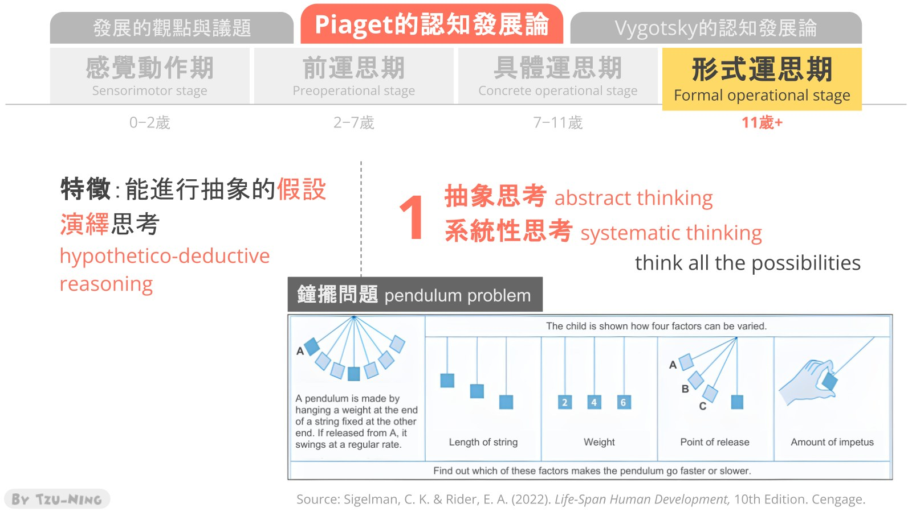
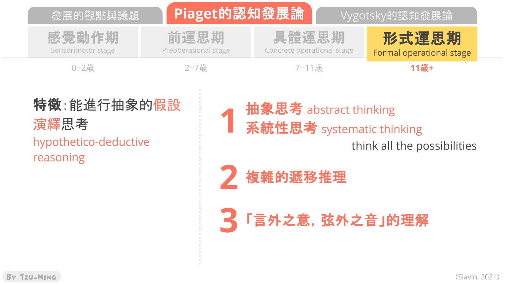
應用：小文的認知探索
課堂以短文〈小文的認知探索〉進行分組活動，從小文成長過程中的行為辨認其所處的時期與特徵。整理如下：
| 時期 | 小文的表現 | 對應概念 |
|---|---|---|
| 感覺動作期 | 嬰兒時期喜歡會發出聲音的搖鈴；搖鈴被毛巾蓋住時立刻轉移注意力。 | 以感覺為主的基模；尚未具物體恆存概念 |
| 感覺動作期 | 一歲左右開始會掀開毛巾尋找搖鈴。 | 物體恆存 |
| 前運思期 | 不明白表哥口中說的「弟弟」是誰。 | 不可逆性 |
| 前運思期 | 一樣大的黏土被搓成長條後，認為自己的比較多。 | 知覺集中傾向；不具守恆概念 |
| 前運思期 | 和奶奶通電話時，把畫舉到話筒前，以為奶奶也看得到。 | 自我中心 |
| 具體運思期 | 知道倒進不同高度杯子的果汁一樣多。 | 守恆（保留）概念 |
| 具體運思期 | 戴上有色眼鏡時，能說出周遭物體真正的顏色。 | 推論的實在 |
| 具體運思期 | 能分出哺乳類、鳥類與魚類，並在哺乳類中再分出貓科與犬科。 | 分類、類包含 |
| 具體運思期 | 理解 3 + 5 = 8，則 8 − 5 = 3。 | 可逆性思考 |
| 具體運思期 | 回答「A 比 B 高、B 比 C 高，A 和 C 誰高？」時需要畫圖。 | 遞移推理，仍需具體情境輔助 |
| 形式運思期 | 國中時能從多角度辯論議題，運用「如果……那麼……」的論證；在鐘擺實驗中系統性地提出假設並控制變因。 | 假設演繹思考、系統性思考 |
小文需要畫圖才能回答遞移推理的問題，顯示具體運思期的兒童需要具體的事物輔助，才能學習抽象的概念；教學時可多利用具體的圖示、操作與比對。
皮亞傑理論的定位、貢獻與批判
在三個議題上的定位
回到發展理論的三個議題：皮亞傑兼重先天與後天；明顯屬於階段論；對早期與晚期經驗都重視，因為新經驗會不斷與既有的基模核對，產生同化與調適。
四項貢獻
- 視兒童為「主動建構者」：打破兒童被動接收知識的觀念，奠定建構主義的基礎。
- 建立具普遍性的發展架構：提出明確且具階段性的認知發展架構，供後續研究者參考。
- 開創臨床晤談：不只看答對與否，而是重視兒童「為何犯錯」背後的思考邏輯。臨床晤談的結果具有高度可複製性，至今仍可重現，例如讓分別處於前運思期與具體運思期的兩個孩子做守恆作業，回答會截然不同。
- 深遠的教育實務啟發：促成「以兒童為中心」的理念，影響適性教育與發現式學習。
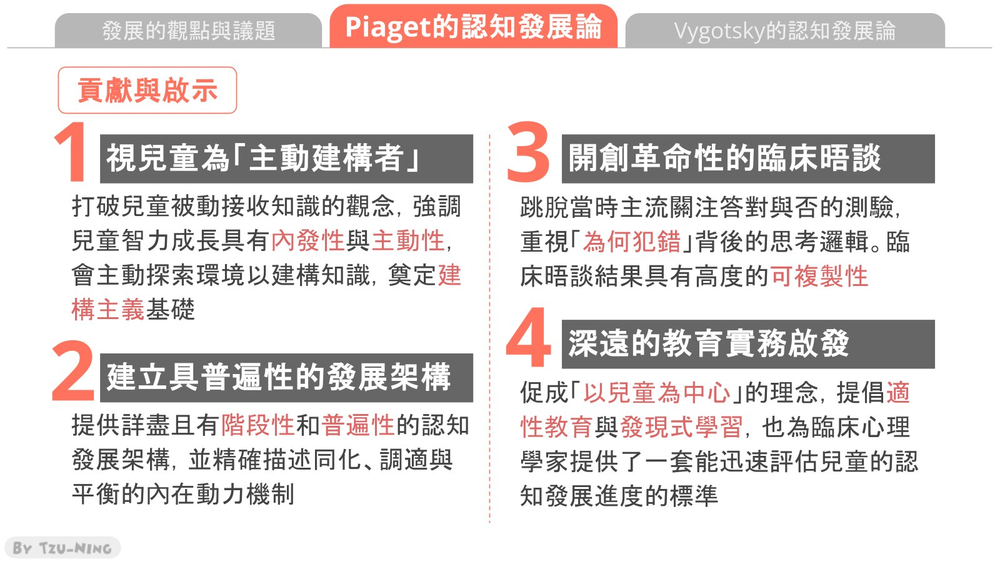
四項批判
- 低估幼兒、高估青少年：後續研究發現，幼兒具備守恆與觀點取替（克服自我中心，知道站在別人的位置會看到不同景象）能力的時間比皮亞傑估計的更早；另一方面，許多青少年或成人從未真正達到形式運思期的抽象邏輯水準，或只在部分情境中能進行系統性思考。
- 樣本與研究方法侷限：樣本數少（如觀察自己的三個孩子），且多為白人男孩，缺乏代表性；部分測驗情境脫離兒童的生活經驗，例如住在海邊、從未見過高山的兒童，難以進行三山實驗。
- 忽視社會文化與情感因素：過度關注個體與物理環境的互動，較少談及同儕互動、成人引導與文化脈絡的影響。
- 嚴密的階段論受到質疑：皮亞傑以明確的年齡劃分階段，但現代心理學家認為發展往往是漸進且連續的，並具有領域特定性（domain-specific），而非跨領域一致（domain-general）。例如同一個孩子可能已具備液體守恆，卻尚未具備數量守恆。
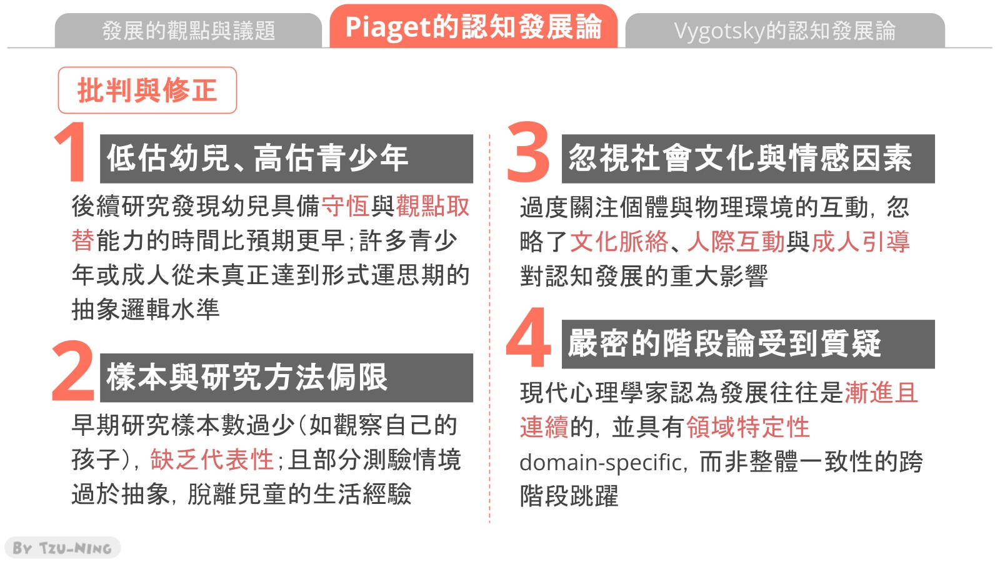
Hughes 的警察娃娃任務與新皮亞傑學派
針對三山實驗脫離兒童生活經驗的問題，Hughes（1975）改用較貼近兒童生活的「警察抓小偷」任務（Policeman Doll Task），詢問兒童小偷要躲在哪裡才不會被警察找到。結果發現，兒童克服自我中心、具備觀點取替能力的年齡，比皮亞傑所說的更早。
為回應上述批判，新皮亞傑學派（Neo-Piagetians）提出三項主張：
- 兒童的運思能力深受作業性質與情境影響。
- 訓練和經驗（包括社會互動）可以加速兒童的發展。
- 社會文化對發展有重要的影響。
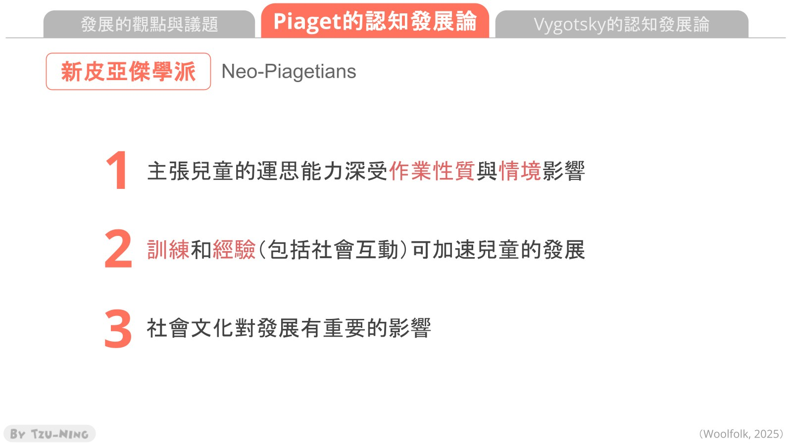
維高斯基其人
維高斯基（Lev Vygotsky，1896–1934）生於俄羅斯，與皮亞傑同年出生，37 歲即因肺結核過世。他 15 歲時便有「小教授」的綽號，加上英年早逝，被譽為「心理學界的莫札特」。
維高斯基是猶太人，當時能進入大學就讀的猶太人比例很低，須經過抽籤（"Jewish Lottery"）決定；他抽中後才得以進入莫斯科大學。畢業後他回到家鄉任教，從事與身心障礙有關的教育工作。他關心的不只是孩子「會不會」，而是「如果給予適當的幫助，這個孩子可以走多遠？」他在大學主修法律，同時修讀歷史與哲學，並對文學深感興趣，曾寫過研究莎士比亞《哈姆雷特》的論文；他也非常重視語言對認知發展的影響。
維高斯基生前並不出名。較受矚目的一次，是他在全俄心理神經學大會上，於行為學派盛行的年代質疑「僅憑條件反射，能夠了解人的思考嗎？」此後他進入心理學研究機構工作。他一生唯一一次出國，是到倫敦參加聾人教育會議。他的理論長期被埋沒，一方面受到史達林時期蘇聯政府的學術審查與打壓，另一方面著作以俄文寫成；直到 1962 年《思想及語言》英文版（Thought and Language）出版，距他過世已近三十年，他的理論才逐漸受到重視。
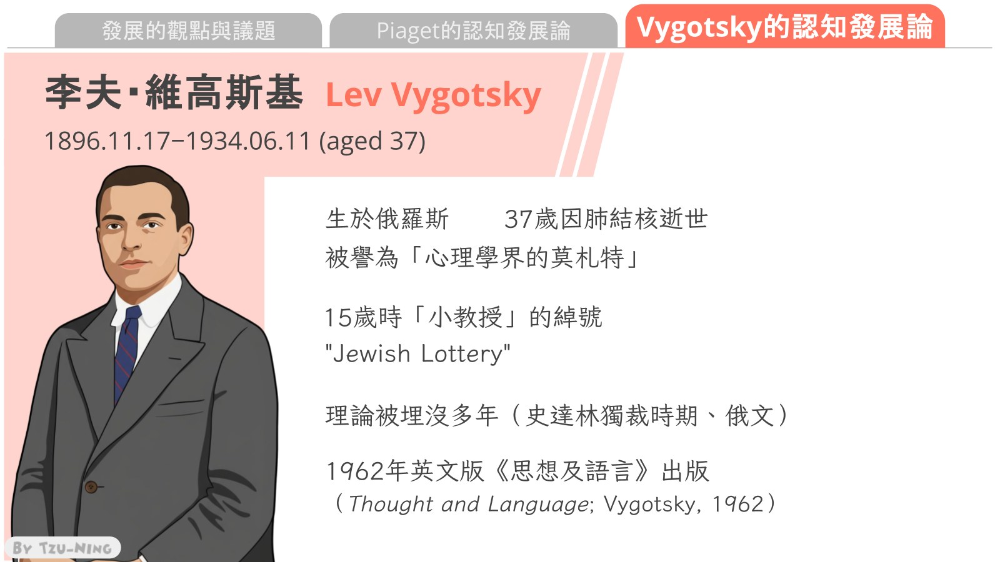
維高斯基的主要概念
維高斯基的理論有三個基本主張：
- 社會文化是影響認知發展的要素，智力發展必須從兒童所經驗的歷史與文化脈絡來理解。這正是皮亞傑較少論及的部分。
- 認知發展與他人的教學介入密切相關。更有知識的他人（More Knowledgeable Other, MKO）介入，有助於認知發展；這種重視與更有能力者互動的觀點，可以看到日後小組討論與合作學習的影子。
- 認知思維與語言發展密切相關。
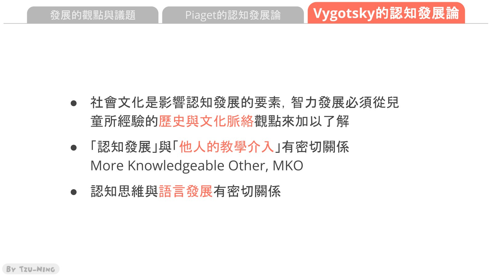
私自話語
私自話語（private speech）是指兒童在做事時自言自語，例如「我應該先弄這個，還是……」。維高斯基認為私自話語是好事，兒童透過自己的話語逐步釐清要做的事，有助於認知發展。皮亞傑則將同樣的現象視為自我中心的表現：兒童只是在自己的世界裡跟自己說話，不在意別人。兩人對私自話語的看法截然不同。
近側發展區（ZPD）
近側發展區（zone of proximal development, ZPD），又譯可能發展區，是維高斯基理論中最核心的概念。可以用三個同心圓說明：
- 舒適區（comfort zone）：沒有他人幫忙就能做到的事。
- 近側發展區（ZPD）：在他人的幫忙下能夠做到的事。
- 挫折區（frustration zone）：即使有他人幫忙仍做不到的事。
教師的目標在於找到學生的近側發展區，並思考給予什麼樣的協助，能讓學生走得更遠。
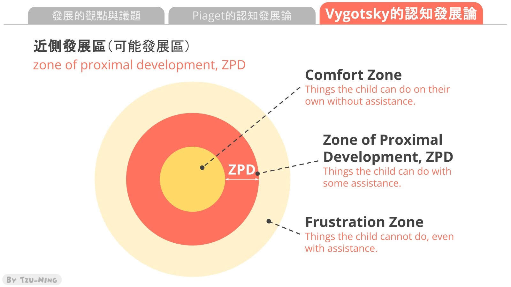
鷹架作用
鷹架作用（scaffolding，又譯鷹架構築）是指提供合適的支撐與支援。「鷹架」一詞由 Wood、Bruner 與 Ross 於 1976 年提出，並非出自維高斯基本人，後來常被用來說明如何在近側發展區中協助學生。以工地的鷹架為比喻：房子蓋到一樓時，鷹架只會比目前的高度高一點點；整棟樓蓋好之後，鷹架就要拆除。因此鷹架有兩個要點：每次只比學生現有能力高一點，學生學會之後要撤除。
生活中的鷹架例子包括輔助筷、握筆器與單車輔助輪，學會之後都會拿掉。教學上的例子包括教數學位值時使用的定位板、學習單提供的架構，以及寫字練習時的輔助虛線；學生學會後便不再需要，也就是鷹架的撤除。
認知學徒制
認知學徒制（cognitive apprenticeship，又稱認知見習）類似傳統的學徒制：學徒觀察資深師傅如何完成工作，師傅邊做邊說明要注意的地方，接著讓學徒試著動手，並在過程中搭鷹架、進行評量。認知學徒制包含楷模學習、教練式教導（coaching）、搭鷹架與評量。
維高斯基的這些觀點，支持了後來的合作學習：合作學習小組中，由較有能力的同儕（MKO）帶領較不擅長的同學。
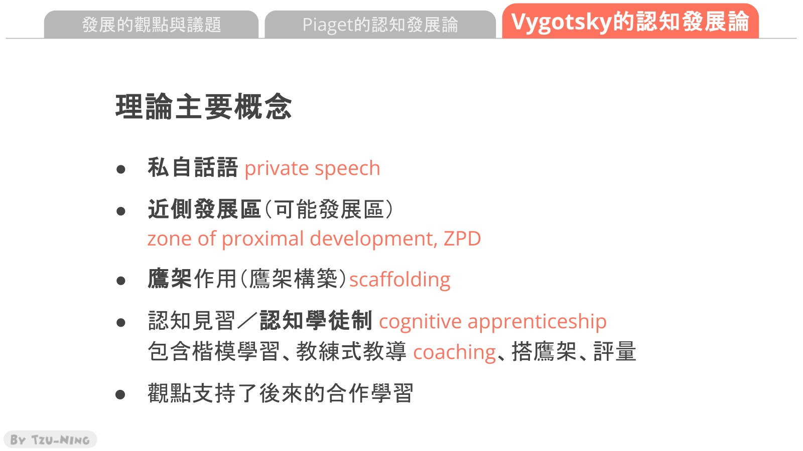
維高斯基理論的貢獻、限制與定位
維高斯基的理論篇幅較少，主要原因在於他英年早逝，沒有機會做更完整的論述。其貢獻與啟示有三：
- 教學的最佳效果產生在近側發展區。學生不需幫忙就會的內容不必再教；給了所有協助仍做不到的內容則落在挫折區，師生都會感到挫折。不過，要判斷學生目前是否處於近側發展區、是否已達到近側發展區的上限，並不容易。
- 可將程度不同而能彼此協助的兒童組成小組，進行合作學習。
- 應用鷹架構築策略協助學生學習。
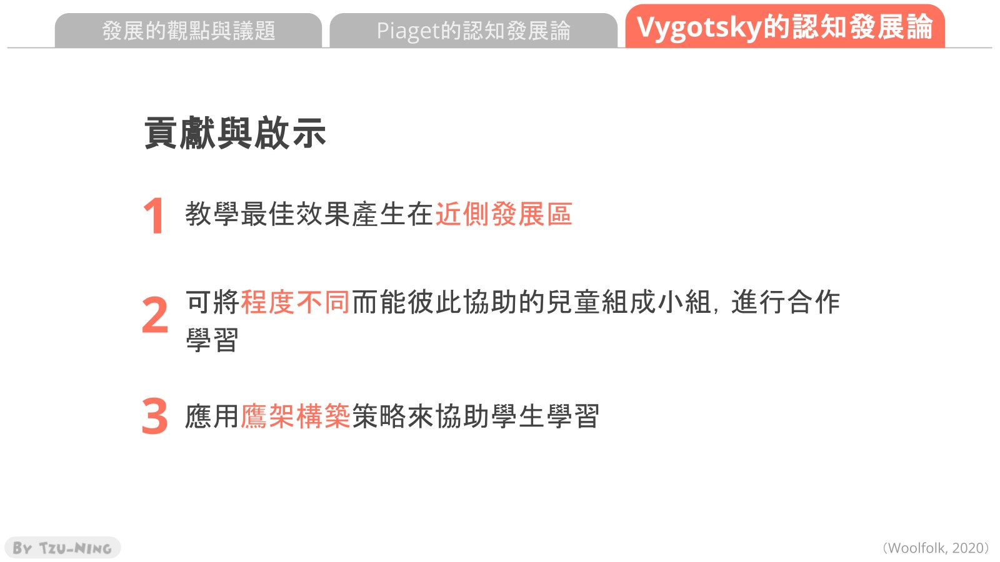
其限制有三：誇大了文化與社會歷程在認知發展中的角色；只提出基本原則；未說明理論在教學上的應用，許多內容是後人補充的。
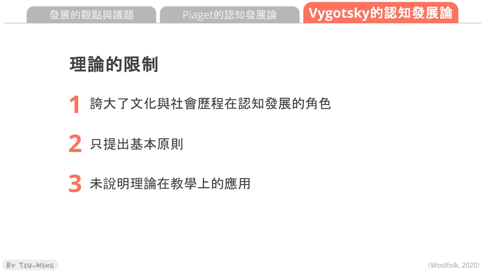
在發展理論的三個議題上，維高斯基偏向後天（nurture）；屬於連續論，認為認知發展是累積的歷程；並較重視早期經驗。
皮亞傑與維高斯基的比較
比較兩人的理論時，可以從發展基礎、主要概念、發展歷程與發展方向四個向度著手：
| 向度 | 皮亞傑 | 維高斯基 |
|---|---|---|
| 發展基礎 | 偏先天（實際上兼重先天與後天） | 偏後天 |
| 主要概念 | 基模、同化、調適、平衡 | 社會文化、語言、鷹架、近側發展區 |
| 發展歷程 | 質的改變；階段論 | 量的改變；連續論 |
| 發展方向 | 內在成熟、向外發展；發展先於學習（內發歷程） | 外在學習、向內成長；學習先於發展（外鑠歷程） |
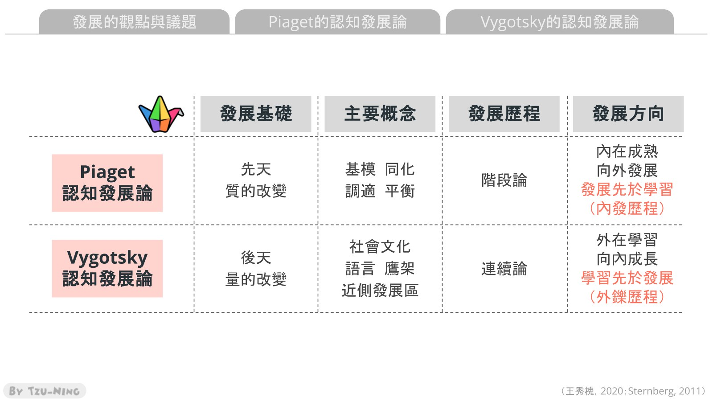
這張比較表本身也是一個鷹架的例子。若只給出四個向度、請學生自行填寫，對初學者而言仍然太難，討論時往往不知從何開始；改為提供選項讓學生選擇歸類後，學生便較清楚要做什麼。教師自以為提供了鷹架，未必就是合適的鷹架，需要依學生的反應調整。
本週重點整理
- 描述性研究包括調查、晤談與觀察；個案研究深入探討一個人、團體或特定情境，民族誌研究則著重理解特定群體的文化、價值觀及日常實踐。
- 行動研究是教師研究自己班級問題的描述性研究，在理論與實務之間來回辯證。
- 發展理論的三個議題：先天 vs. 後天、連續論 vs. 階段論、早期 vs. 晚期經驗（關鍵期 vs. 敏感期）；現代觀點重視先天與後天的交互作用、連續與不連續變化的並存，以及早期與晚期經驗的共同影響。
- 皮亞傑的核心概念：基模、同化、調適、平衡與失衡；兒童是主動的建構者。
- 皮亞傑的四個時期：感覺動作期（0–2 歲）、前運思期（2–7 歲）、具體運思期（7–11 歲）、形式運思期（11 歲以上）。
- 前運思期的三種心理限制：知覺集中傾向、不可逆性、自我中心；具體運思期能排序、分類（類包含）、遞移推理、去集中化（具守恆概念）、可逆性思考與推論的實在。
- 皮亞傑理論的主要批判：低估幼兒、高估青少年；樣本與方法侷限；忽視社會文化；階段論過於嚴密。
- 維高斯基重視社會文化、MKO 與語言；核心概念為近側發展區（ZPD），以及鷹架作用（每次高一點，學會後撤除）。
- 皮亞傑：先天、質變、階段論、發展先於學習；維高斯基：後天、量變、連續論、學習先於發展。
資料來源
- 王孜𡩋，〈認知發展〉課堂講授，2026 年 10 月 15 日。
- 王孜𡩋，〈認知發展〉課堂投影片，國立臺灣師範大學教育心理與輔導學系。文中圖片皆取自此投影片；描述性研究與行動研究部分取自〈教育心理學概論〉課堂投影片。
- 文中引用的研究文獻依投影片標註：Anagnostopoulos (2006)；Bloom et al. (1985)；Haggbloom et al. (2002)；Hughes (1975)；Newcombe (2019)；Sigelman & Rider (2022)；Slavin (2021)；Sternberg (2011)；Woolfolk (2020, 2025)；王秀槐 (2020)；張春興 (2007)；陳慧娟等人 (2019)；雷庚玲 (2021)。